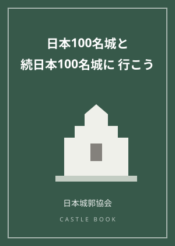

中国語の歌が190年ぶりによみがえる――首里城正殿の復元を祝い、龍潭で「御冠船ハーリー」を再現

城と神社にまつわる新しい動きをお伝えするニュース記事です。出典は美術展ナビ（2026年11月8日）です。2019年10月の火災から7年、復元された首里城正殿の一般公開（11月23日正午から）を前に、首里城を臨む人工の池、那覇市の龍潭（りゅうたん）で11月7日夕方、「御冠船ハーリーとライトアップ点灯式」が行われました。
琉球王国時代、中国から派遣された冊封使をもてなすために龍潭で行われたのが「御冠船ハーリー」です。地元のNPO法人首里まちづくり研究会が、過去の記録や研究をもとに歌詞などをできる限り再現しました。元になったのは1838年に開催された「重陽宴」の記録です。日記にある中国語のハーリー歌は旋律や発音が不明でしたが、一部が那覇市久米で歌い継がれているハーリー歌と合致することが分かり、今回は現代の普通語に近い発音で歌いました。
ライトアップの際は琉球古典音楽が披露され、幻想的な光景と典雅な歌唱に歓声が上がりました。龍潭のライトアップは2027年2月27日まで、午後6時〜午後10時に点灯します。歴史の舞台である龍潭は、首里城正殿の復元を機に改めて注目したいスポットです。
検定の学習ポイントは、琉球王国と中国の冊封使の関係です。首里城は15〜19世紀の琉球王国の城郭で、正殿は1925年に国宝に指定されましたが、1945年の沖縄戦で焼失し、1992年に復元され、2000年には世界遺産に登録されました。龍潭は首里城のそばにある人工の池で、冊封使をもてなす舞台でした。関連記事「11月23日正午、ついに一般公開――首里城正殿、入場料は大人1,000円・正殿内は日時指定の予約制に」もあわせてどうぞ。
11月23日から一般公開が始まる首里城正殿。見学とあわせて、龍潭のライトアップもおすすめです。出かける前に、首里城公園の公式案内で最新の情報を確認してください。
天守つるぎから一言：190年ぶりの歌声が、龍潭の水面に響いたんだね。首里城の復元は、建物だけじゃなく、王国の記憶そのものをよみがえらせているんだ。
城と神社のニュースや検定の情報は、公式SNSでもお知らせしています。InstagramとThreadsの @tabi.kentei をフォローして、最新情報をチェックしてください。
この記事のおすすめ本

表紙イメージ（実際の表紙とは異なります）
PR ガイド・スタンプ帳
日本100名城と続日本100名城に行こう 公式スタンプ帳つき
著者：公益財団法人 日本城郭協会
100名城と続100名城、あわせて200城を一冊に収録した合本版。すでに100名城を巡り始めた人が、続編までまとめて持ち歩きたいときに便利です。
Amazonで見る価格はAmazonでご確認ください／リンク先：Amazon.co.jp

表紙イメージ（実際の表紙とは異なります）
PR ビジュアルガイド
行った気になる！すごい名城 日本の城50
著者：香川元太郎・小和田哲男
日本各地から50の名城を、大迫力の写真と精密イラストで解説。次の城めぐりの行き先選びにも、自宅で眺めて楽しむ画報としても使えます。
Amazonで見るKindle版あり／価格はAmazonでご確認ください／リンク先：Amazon.co.jp

表紙イメージ（実際の表紙とは異なります）
PR 読み物
城好き気象予報士とめぐる名城37 天気が変えた戦国・近世の城
著者：久保井朝美
気象予報士の視点で37の名城をめぐる一冊。天気や気候が築城や戦にどう影響したかという切り口が新鮮で、城を見る目が変わります。
Amazonで見る価格はAmazonでご確認ください／リンク先：Amazon.co.jp
当サイトは、Amazon.co.jpを宣伝しリンクすることによってサイトが紹介料を獲得できる手段を提供することを目的に設定されたアフィリエイトプログラムである、Amazonアソシエイト・プログラムの参加者です。価格・在庫はリンク先でご確認ください。